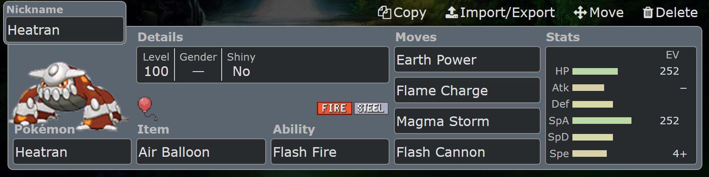

 |
I personaly like using random strategies, one of which consisit of using Heatran with EV's placed into health, special attack, and then a nature that increases speed, and an air balloon.
If I dont have to switch out, I will start a fight with flame charge. If i can get away with a second flame charge I will, but after the first flame charge I typically follow with
whatever move will put out the highest damage
One-Shot K0 teams arent rare. Consider using a pokemon that can use hazard entries and an Azumarill with the ability huge power, stat optimization for Attack and health, with a sitrus berry.
All you will need to do is use bellydrum, taking half your health, but activating sitrus berry, thus healing 25% of your health. From there all you do is use aqua jet. Most pokemon will get
k0ed in one hit.
Last but not least, the biggest mennace of all, a level one rattata with quick attack, endeavor, and a focus sash. The idea is you get put to 1hp, and then use quick attack. Take it a
step further and have a leech seed setter.
|